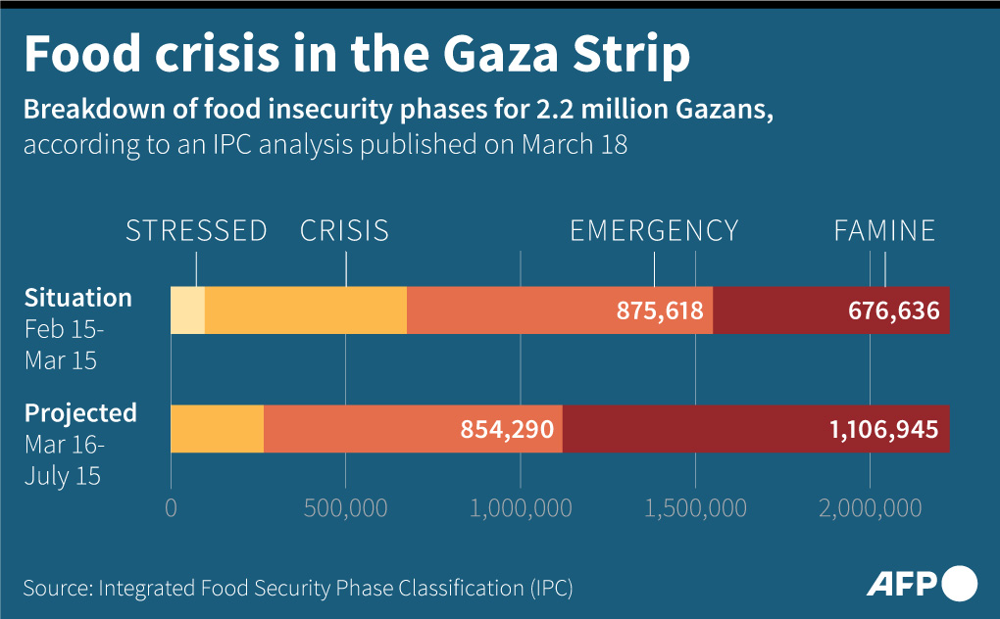

|  |
Finding ways to stop Famine
Large quantities of food are beginning to arrive in Gaza. But continuous food delivery is under threat of blockades by radical groups in Israel and there are reports of Israeli police and IDF stopping and delaying food convoys. There have been several IDF attacks in Gaza on food convoys and on the people getting food off the aid trucks.
The Palestinian tribes and clans in Gaza are beginning to participate in enabling food distribution. But the strong resistance to any perceived cooperation with Israeli authorities is impeding the process. There is a lack of coordination on this critical issue between groups of authority in Gaza.
The history of mutual atrocities is impeding delivery of life saving aid. Working together may be hard or impossible but there are always ways of getting the most critical tasks done, even without mutual cooperation. Ways must be found to continuously get the food to the people that need it. Continuous delivery and distribution of food is the most important priority.
| Previous |  |